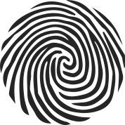

italiano | english

Mi chiamo Pamela Santucci. La mia formazione nel campo del massaggio ha inizio nel 2007. A seguito dell'iter triennale ho conseguito il Diploma di Operatore Shiatsu nel 2010 presso la scuola Holismos di Massimo Cantara. Nel 2011, dopo l'esame presso la Federazione Italiana Shiatsu Insegnanti e Operatori, inizio a praticare Shiatsu professionalmente con adulti e bambini.
Nel frattempo partecipo con continuità a seminari di approfondimento e formazione con insegnanti di diverse provenienze, tra cui Virginia Wood, Gerry Rixen, Myriam Sofia Lopez, Diego Sanchez, Leisa Bellmore, ed anche a corsi di massaggio diversi dallo Shiatsu.
Con le tecniche specifiche e i metodi di massaggio appresi amo diversificare e integrare i miei trattamenti:
La mia lingua madre è l'italiano. Ho buona padronanza dell'inglese e del tedesco.
Im Sihlhof 22, 8134 Adliswil
+41765897803
pamela.santucci@gmail.com